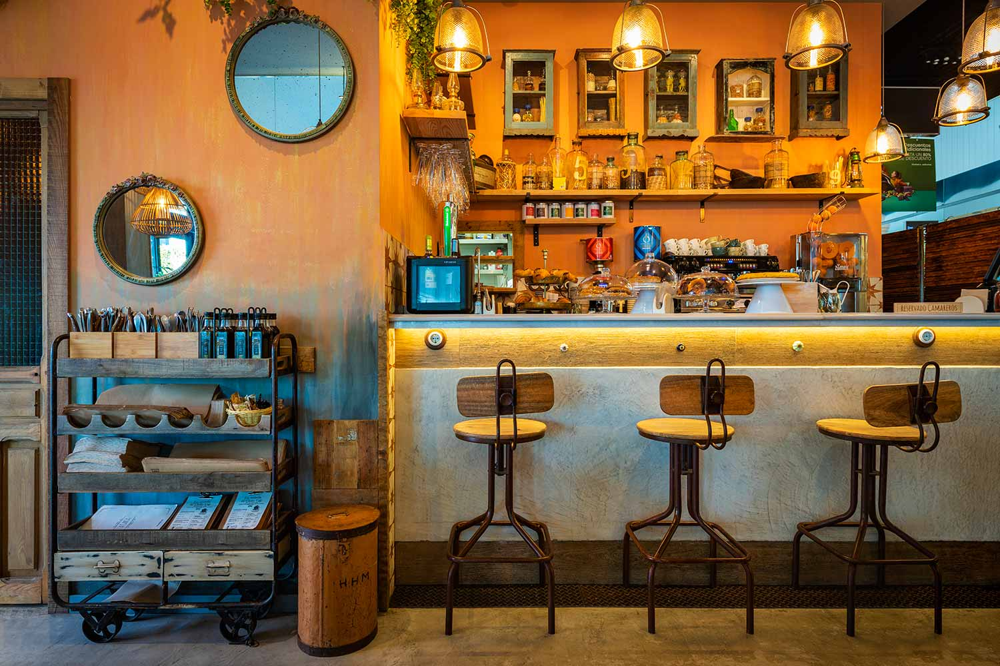

<div class="principal">
      <div class="carta">
            
           
              <h5 class="card-title">Visita nuestra página</h5>
              <!--  -->
              <p class="card-text">¡Bienvenidos a nuestra web de recetas criollas de Cuba! Sumérgete en la deliciosa y colorida cocina cubana mientras te compartimos las mejores recetas tradicionales de la isla.

                En nuestra plataforma, encontrarás un extenso catálogo de platos criollos cubanos, que representan la fusión de diversas influencias culinarias, como la española, africana y caribeña. Desde los emblemáticos arroces y frijoles negros, hasta el sabroso picadillo criollo y el refrescante mojito, nuestras recetas te transportarán a las calles de La Habana y te permitirán disfrutar de los sabores auténticos de Cuba desde la comodidad de tu hogar.
                
                Nuestra web está diseñada para que puedas explorar y descubrir fácilmente las recetas que más te interesen. También incluimos opciones para buscar recetas según tus preferencias dietéticas, como opciones vegetarianas, sin gluten o bajas en calorías. Además, ofrecemos consejos prácticos y trucos de cocina para asegurarte de que tus platos criollos cubanos sean auténticos y deliciosos.
                
                No importa si eres un cocinero experimentado o un principiante en la cocina, nuestras recetas están diseñadas para ser accesibles para todos. Cada receta incluye instrucciones claras y concisas, junto con fotografías atractivas que te guiarán a lo largo del proceso de preparación. También puedes encontrar videos tutoriales que te mostrarán los pasos clave de cada receta.
                
                En nuestra comunidad, también podrás conectarte con otros amantes de la cocina cubana. Comparte tus propias creaciones culinarias, intercambia consejos y recomendaciones, y descubre nuevas ideas para tus menús. ¡La nostalgia de Cuba y su exquisita comida nunca había sido tan fácil de encontrar!
                
                Así que, ¿qué esperas? Explora nuestra web y descubre el encanto y la riqueza de la cocina criolla cubana. Sigue nuestras recetas paso a paso, crea platos memorables y sumérgete en la cultura culinaria de la isla más grande del Caribe. ¡Buen provecho! </p>
              <button  class="btn btn-primary" style="background-color:whitesmoke;border-color: white;color: black;" disabled="true" disabled="true">VISITANOS!!!</button>
         </div>
 </div>
    
      
      
        <!-- <p>Contacto</p>
        <div>
            <button class="btn btn-primary;" (click)="volver()">INICIO</button>
        </div>
         -->
    